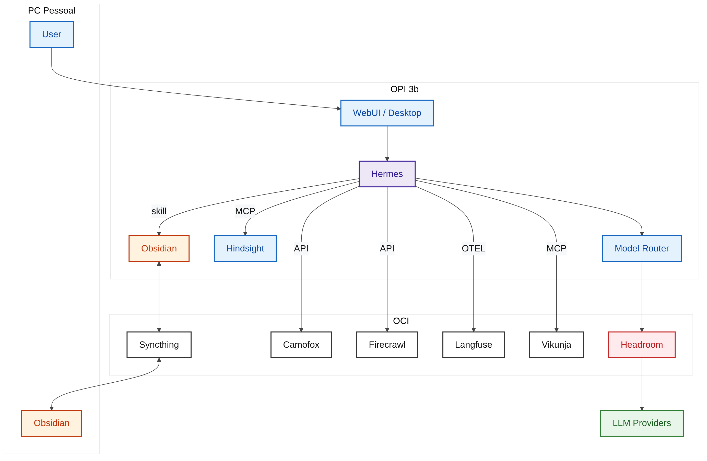
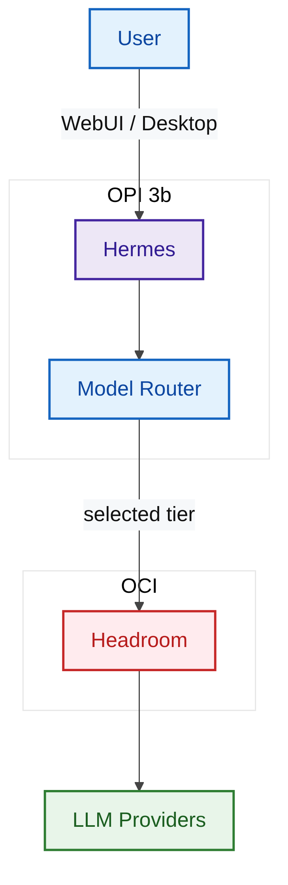
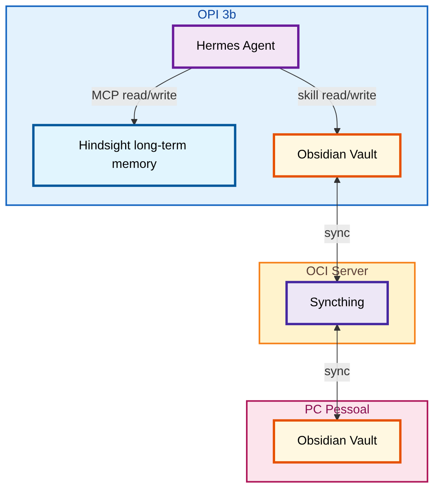
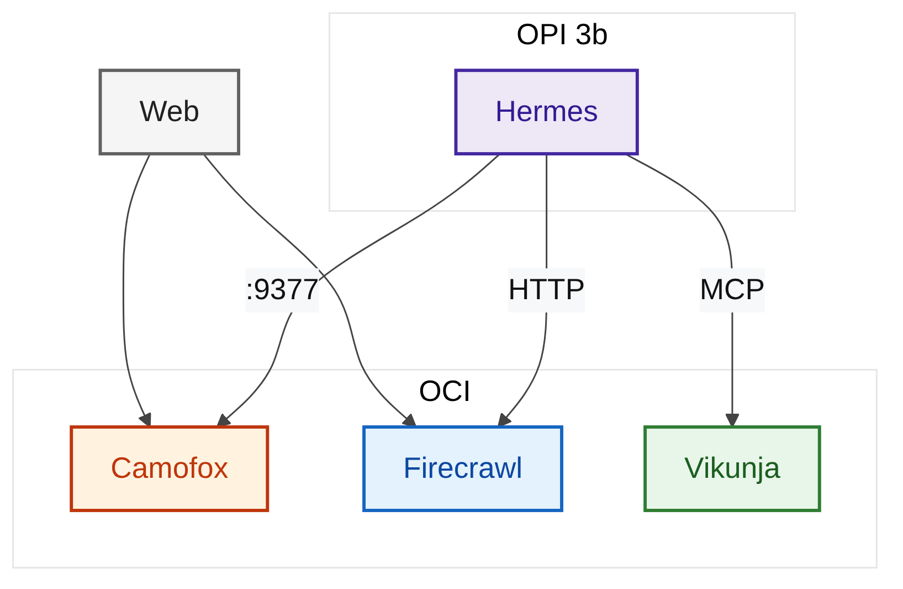
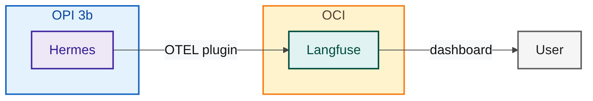

Topologia, peças e fluxos de um agente pessoal open-source que roda 24/7.
Três problemas que todo mundo que mexe com agentes pessoais conhece: as credenciais dos providers
espalhadas em config.env que se multiplicam e viram ponto de falha de segurança; o contexto que se
perde com o tempo, mesmo com sistema nativo de recuperação de sessão, quando memórias antigas ou conversas longas
não cabem mais no histórico recente; e ferramentas de busca e navegação que até funcionam, mas não conversam entre
si.
Depois de usar o Hermes e outros agentes como Openfang, Openclaw, Opencrabs entre outros. Eu montei meu ecossistema pessoal que roda em três máquinas diferentes, com todas as peças em stack aberta, e que persiste memória entre sessões sem eu precisar pensar nisso. Não é sofisticado demais — é só organizado tirando do Hermes a responsabilidade de ser tudo em um só lugar. Este artigo é sobre a topologia, as peças e o que cada uma resolve. Os passos de montagem ficam pra uma parte 2.
O sistema vive em três máquinas: um mini-PC ARM (Orange Pi 3b com 8GB de RAM) escondido atrás do rack para os gatos não brincarem com ela, meu PC pessoal, e um servidor na Oracle Cloud (free tier Ampere A1 + Coolify, sem custo de infra). Cada máquina tem um papel claro, e o tráfego entre elas segue uma direção única.

No OPi roda o Hermes Agent propriamente dito, o Model Router (skill que escolhe o tier de modelo para cada tarefa), e o servidor MCP do Hindsight, que segura memória otimizada para o agente em três janelas — curto, médio e longo prazo. É aqui que o agente efetivamente vive. E uma pasta com o vault do Obsidian sendo compartilhados na rede pelo Syncthing.
No PC pessoal só fica a interface do Hermes (Desktop/WebUI) e o dashboard do Langfuse, que roda dentro do OCI mas é acessado pelo browser local. O Syncthing chega só com o vault do Obsidian — a ideia é justamente abrir o Obsidian na minha máquina pessoal e acessar os arquivos compartilhados pela rede como se fossem locais.
No OCI free tier ficam os serviços persistentes: Headroom (proxy compressor que vou explicar em detalhes), Camofox (browser anti-detecção), Firecrawl (search e scraping), Langfuse (observabilidade), Vikunja (tarefas pessoais via MCP) e Syncthing (sync de arquivos entre os três nós). É o hub de infraestrutura tirando esse peso de rodar na placa do OPi.
Cada vez que eu digito algo no chat, o pedido atravessa esse caminho:

WebUI ou Desktop → Hermes → Model Router → Headroom → um dos quatro providers reais (OpenRouter, Nvidia, Xiaomi, MiniMax). Cada model/provider tem um trabalho específico assim como um custo e graças ao Router e o Headroom o custo diminui.
O Model router fica responsável por categorizar o prompt/tool em 5 tiers diferentes sendo eles categorizados pela complexidade da tarefa a ser realizada, assim podemos atribuir tarefas simples a modelos mais baratos e com menos inteligência e tarefas mais complexas a modelos mais caros e com mais recursos.
O Headroom fica responsável por fazer um proxy entre os providers e o Hermes, quando ele recebe um prompt + todo o contexto ele faz uma compressão desse texto todo além de ajustes e limpeza de itens não utilizados como tags, espaços e caracteres especiais e envia para o provider de LLM. Além disso o Hermes somente tem as API key do headroom e o headroom tem todas as API keys dos providers, com isso a chance de um vazamento de credenciais diminui pois em nenhum arquivo local tem as credenciais dos providers.
O truque que amarra as duas peças: todos os endpoints de modelo no Hermes apontam para Headroom. O agente nunca fala com um provider diretamente. Isso é o que permite mover sem reescrever nada.
O ponto central do design é que memória para agente é diferente de memória para humano. São produtos diferentes, com formatos diferentes, e um único sistema tentando servir os dois vira algo que ambos usam mal.

Hindsight roda dentro do Hermes via MCP e guarda memória em três níveis — curto, médio e longo prazo — em formato indexado para que o agente recupere contexto de forma estruturada. É otimizado para a máquina ler. Usando sistemas de banco com vetores e pesquisas semânticas.
Obsidian roda no filesystem e guarda as mesmas notas em markdown puro, navegável, linkável, editável. Otimizado para mim ler e mexer. É meu vault, durável, legível, e o melhor de tudo compartilhado com o Hermes assim sempre posso ter aquele apoio extra para organizar, gerar notas, planejar etc.
A duplicação existe e é proposital: Hindsight é working memory rápido pra sessão, Obsidian é conhecimento durável pra sempre. Mas o obsidian tem sempre o problema de ser local mas como o syncthing esse problema deixa de existir pois ele replica a pasta do vault entre os três nós. Com isso posso acessar minhas notas em qualquer lugar que configure o syncthing.
Tudo que envolve interação com a web ou com minhas listas pessoais passa pela OCI:

Vikunja é meu gerenciador de tarefas pessoais exposto via MCP — Hermes lê, escreve e atualiza minhas listas sem eu abrir outra aba. Tarefas humanas, interface de agente. Apesar de sempre errar o nome, o Vikunja é uma alternativa ao Trello, simples e pratica e selfhosted.
Camofox é um fork do Firefox com anti-detecção escrita em C++. Quando um site bloqueia meu IP ou pede Cloudflare, Hermes não tenta resolver pela força — passa a URL para o Camofox, que renderiza como um navegador legítimo e devolve o HTML. Entao nao preciso ficar brigando quando preciso que o Hermes leia um site.
Firecrawl faz search simples e devolve as pesquisas em JSON, na pratica ele faz o papel do Google mas com uma api que nao me cobra centavos por pesquisa, mas que ganha do search built-in do hermes que faz um fetch na url e extrai o conteudo html. OBS.: o Firecrawl usado e a versao selfhosted
A razão de tudo isso ficar longe do Hermes é simples: cada um desses serviços tem dependências que mudam, quebram, ou precisam de restart. Mantê-los num nó separado significa que o Hermes — que precisa estar sempre de pé — fica isolado do barulho. Alem de poupar a plaquinha do OrangePi.
Como SRE, não posso viver sem observabilidade, não é mesmo?

Langfuse recebe traces via plugin e OTEL direto do Hermes — toda chamada vira um span com modelo, latência, tokens, custo estimado. O dashboard mostra onde o dinheiro está indo, qual task está arrastando, e qual modelo do Model Router está realmente sendo escolhido vs. qual está sendo chamado por engano.
o langfuse faz o que eu mais sinto falta nos portais dos providers que e me mostrar o prompt, o system prompt, o contexto, o que realmente foi enviado para o modelo e o que foi retornado pelo modelo.
Na próxima parte eu entro na montagem: do OPi ao OCI, do zero ao agente respondendo na WebUI, com Headroom, Model Router e Hindsight. Vou trazer os comandos, os arquivos de configuração e as armadilhas que eu já achei para você não achar.